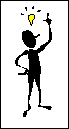

Channel Wizard
6. Preview Page and Add Active Channel Logo
SBN Channel Wizard - Step 6 of 7

Right-click and copy the image
below to your computer. You will use this button on your preview page to launch your channel. To use the Microsoft
Add Active Channel
logo, you must accept the terms of the
Active Channel Logo Agreement
.
Now, click the View Code button below to copy the code to your preview page.
Once you've copied both the image and the code, please click "Next" to complete the creation of your channel.